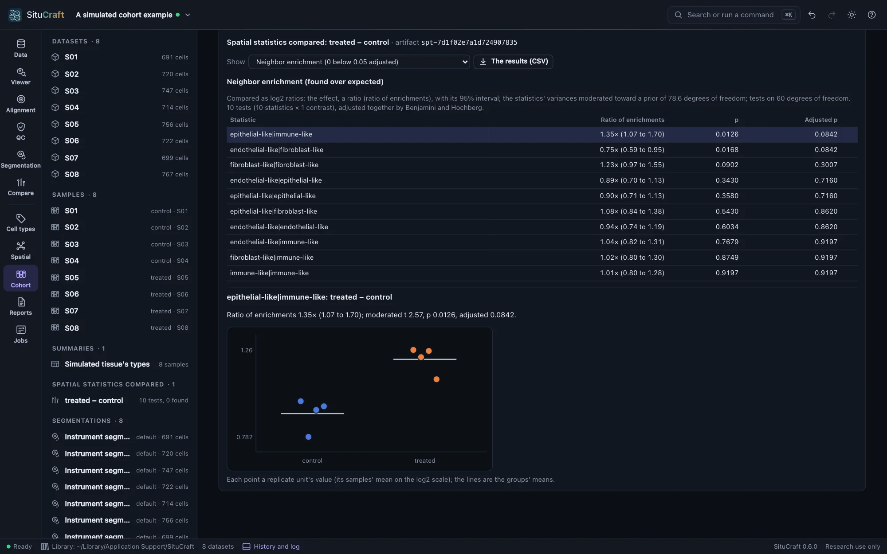
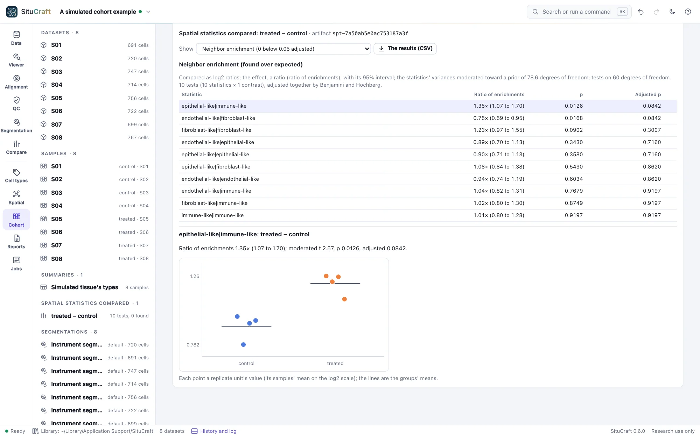

Spatial statistics between groups
Are two cell types more often neighbors in one group than another? SituCraft answers with each sample's own number as one observation, by a model of the design, and gives the effect with its interval.
Each sample's numbers
The same steps on every sample answer the same spatial questions of each (see Sample summaries), and the cohort table holds each sample's numbers. Spatial statistics between groups in the Cohort view compares three families of them:
- Neighbor enrichment: each pair of labels' neighbors found over those expected (see Spatial analysis). It is compared as a log2 ratio, and the effect is a ratio of enrichments.
- Nearest distances: each label's median distance to the nearest cell of another, also compared as a log2 ratio, the effect a ratio of distances.
- Moran's I of each gene's counts, the effect a difference.
Niches' shares are counts of cells, compared in Differential abundance by models of counts. A design row's value is the mean of its samples' (on the log2 scale for a ratio). A statistic that some row has none of, such as a pair's enrichment where a sample has none of one label, is left untested, and the reason is said.
The model
Each statistic is a linear model of the design, with its pairing and covariates, fitted by least squares. A family's statistics are fitted together: each one's variance is moderated toward the family's common one, by as much as their variances agree, and each contrast is tested by the moderated t (Smyth 2004), as limma tests genes. A family of one statistic is tested by its own variance alone. P-values are adjusted by Benjamini and Hochberg over each family's tests, and the universe is stated with them.
Reading the results
Choose a family: the table lists its statistics by p-value, each effect with its interval (95% by default), its p-value and adjusted p. Choosing a row plots each row's value by group, with each group's mean. The results (CSV) writes every test.


With four subjects a group, that change is the family's strongest, and its interval is above 1. Adjusted over the ten pairs, it is not below 0.05 (0.084): a larger cohort, or pairing, would say more.
By remote control
compare_spatial compares the samples' spatial statistics (every family the summary has, or those named; by the design draft or a saved design) and answers every test. See Remote control.
How it is checked
- Against limma: on ten cases (the simulated cohort's enrichments, nearest distances, Moran's I and niches' shares as numbers, by condition and by condition and slide; three statistics in three groups, each against the first and the third against the second; one statistic alone), every estimate, interval, moderated t and p, and the prior, equal limma 3.68.5's (
lmFitandeBayes) within 10⁻¹³ (validation/reference/limma/). - Against statsmodels: each statistic's fit before moderation (its coefficients, residual deviation, and each contrast's estimate, interval, t and p on the residual degrees of freedom) equals statsmodels 0.15.0's OLS within 10⁻¹³.
- In the page: on the simulated cohort, every family is compared and the epithelial-like and immune-like enrichment is higher in the treated subjects, its interval above 1. A cohort whose steps asked no spatial question has nothing to compare, and says so. The null cohort's worked example finds none of its 10 enrichment tests below an adjusted p of 0.05 (the lowest 0.36).
- On simulated cohorts: of 2,000 null cohorts, 5.1% (nearest distances), 5.3% (Moran's I) and 5.5% (enrichment) of the tests below 0.05, weekly; see Error rates and scale.